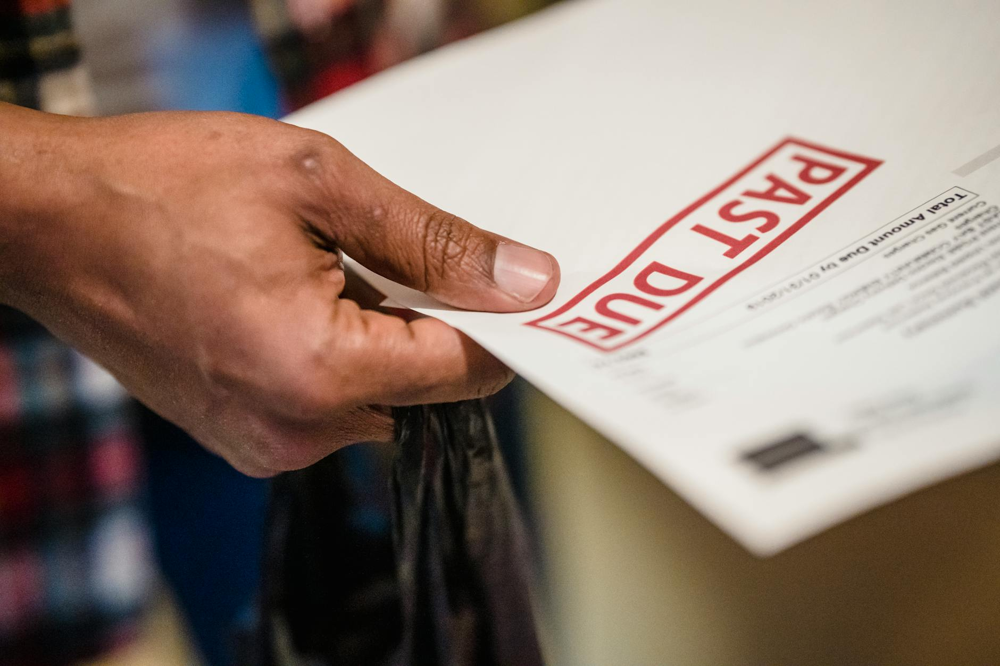

TL;DR
For freelancers, FreshBooks is excellent for usability while Wave is a solid free alternative. Pay attention to thresholds; upgrade when you exceed 10 invoices monthly or $3,000 in revenue.
Quick Verdict: Top Invoicing Tools to Consider
Choosing the right invoicing software can transform your billing process. For immediate results, consider tools like FreshBooks, which excels in user-friendly interfaces and automated reminders, or QuickBooks, known for its robust features that include expense tracking and payroll.
Wave, a free option, offers solid invoicing capabilities but lacks complex reporting features. Each tool meets unique needs: FreshBooks is great for small service providers, while QuickBooks suits larger entities or those needing comprehensive financial features.
Consider your specific needs and which of these systems provides the best fit.
Who Should Stay Free and Who Should Upgrade
Deciding whether to stick with free invoicing options or invest in premium software often hinges on user type. Solo freelancers, like graphic designers, may thrive on free versions such as Wave or Zoho Invoice, which adequately support light invoicing needs without cost.
However, once they exceed 5-10 clients or need custom branding, upgrading becomes a serious consideration. On the other hand, small teams—for instance, a marketing agency with several clients per week—should strongly consider premium solutions like QuickBooks or Xero.
These tools enhance collaboration, reporting, and automation, reducing time spent on billing by nearly 30% per month. This frees them up for more crucial tasks like client interactions.
Where Premium Starts Paying for Itself

Understanding when to upgrade from free software to premium options often revolves around specific thresholds. If your business generates more than $3,000 in revenue monthly or your invoicing count climbs above 10 entries per month, you start hitting the limits of free tools' capabilities.
For instance, FreshBooks’ paid tier offers features like expense tracking and automated report generation that can save you hours of manual work—time worth much more than the $15/month price tag.
Failure to upgrade can lead to scenarios where invoicing gets delayed, impacting cash flow. Tracking overdue invoices becomes a tedious job, often resulting in lost revenue when a simple upgrade can alleviate these challenges.
A Real Setup or Switching Scenario
When considering a switch, identify a practical scenario. Imagine a freelance writer using Wave for simple invoicing but facing limitations as their client list grows. They now juggle submissions alongside invoicing, risking late payments.
Transitioning to FreshBooks could streamline this process with automated invoicing. Steps to initiate the switch could be:
- Identify core needs, such as integration with payment platforms like PayPal.
- Signup for a trial, noting features beyond invoicing, like reporting metrics.
- Gradually transfer existing client data and train your clients on the new platform.
- Monitor the switch for challenges, perhaps encountering initial resistance but ensuring the long-term payoff justifies the change.
With an efficient new system, monthly invoicing time could drop from 4 hours to 1 hour, directly impacting productivity.
Mistakes, Hidden Costs, and Overkill Choices
Freelancers often make costly mistakes by choosing software that is beyond their actual billing needs. A classic example is opting for complex solutions like QuickBooks, which can require an additional time investment of 10-15 hours just to learn the basics unless you’re prepared for it.
Costs can also escalate through unnecessary features; for instance, you may not need inventory management if you’re merely providing services. Before committing, assess your situation.
Ask:
- Do I genuinely need comprehensive financial reporting?
- Am I willing to learn complicated software?
- What tools do my clients already use, and would switching add friction?
By clarifying these factors, you sidestep traps of time investment and frustration, leading to improved operational efficiency.
Best Pick by User Type
Selecting the right invoicing software should align with user type and goals. For solo freelancers, Wave offers an excellent free option for basic invoicing needs, while FreshBooks provides more features with packages starting at $15 per month, perfect if you desire simplicity and efficiency.
For small teams or businesses, QuickBooks will shine with in-depth reporting and team collaboration options, though it starts around $25 per month. Another strong contender is Xero, which offers great project management features ideal for creative agencies.
Ultimately, match your choice with your revenue, technical comfort level, and specific needs to ensure you’re not overpaying for features you don’t utilize.
FAQ
Which invoicing software is best for freelancers?
Top choices for freelancers include FreshBooks for ease of use, QuickBooks for comprehensive features, and Wave for cost efficiency.
When should I consider upgrading to a paid invoicing tool?
Consider upgrading when your client count exceeds 10 or your revenue consistently tops $3,000 per month.
This article has been reviewed for practical usefulness and updated as information changes.
Choose faster
Use this article to narrow the field then compare your top options by price, setup friction, and upgrade risk.
Search more articles
Find related tools, workflows, and guides.
Photo credits
- Photo 1: Markus Winkler via Unsplash
- Photo 2: Andrey Matveev via Pexels
- Photo 3: Nicola Barts via Pexels
- Photo 4: Kindel Media via Pexels
- Photo 5: KATRIN BOLOVTSOVA via Pexels